CSCI 0220
Discrete Structures and Probability
CSCI 0220 meets Mondays, Wednesdays, and Fridays from 1:00 - 1:50 pm in MacMillan Hall 117.
I don't know about you, but we're feeling 22! This class gives you the tools to explore interesting questions and convince yourself and others of their answers. You'll be introduced to new worlds of ideas and ways of thinking. We'll learn about Set Theory, Logic, Number Theory, Combinatorics, Graph Theory, and Probability. If these topics sound unfamiliar, not to fear: you're in exactly the right place! This course assumes no prior experience with these topics.
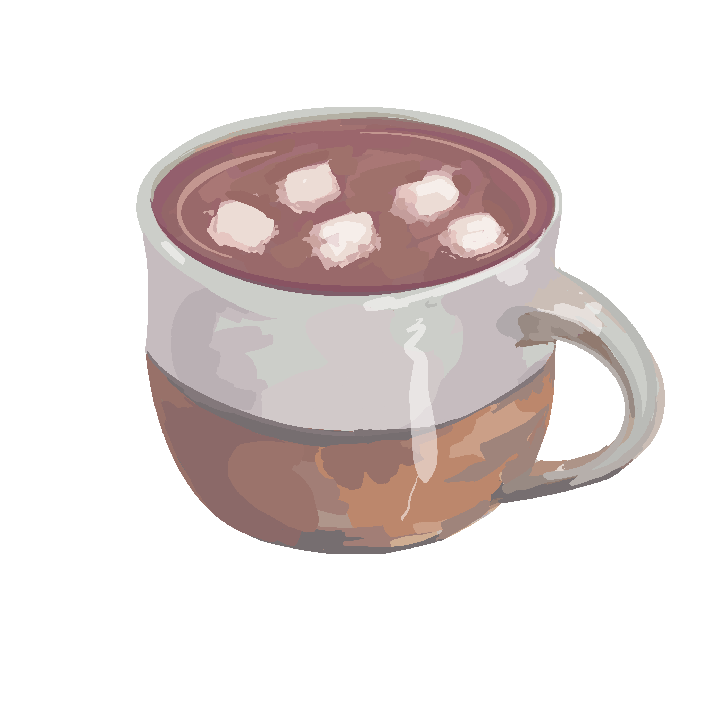
Assignments
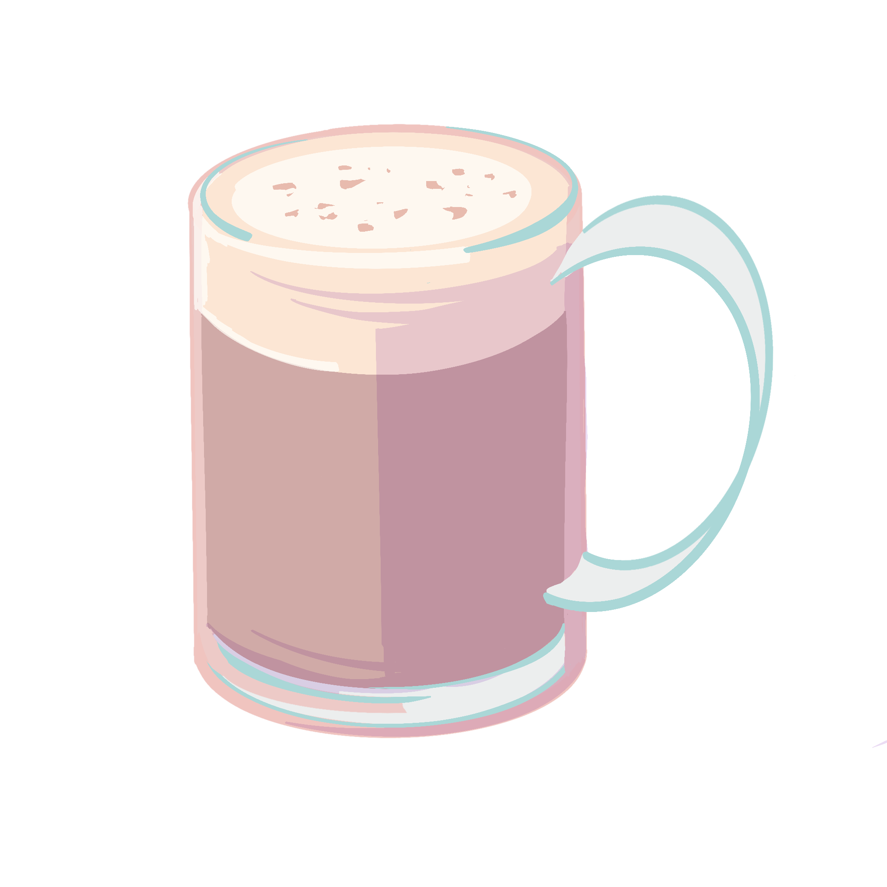
Times listed are in EST. Assignments are released on Saturdays, and are due 11:59pm on Fridays. LaTeX files for homework problems can be found here.
| Homework | Template | Released | Due | Solutions |
|---|---|---|---|---|
| HW0 | - | Jan 26 | Jan 31 | - |
| HW1 | - | Feb 5 | Feb 11 | |
| HW2 | - | Feb 12 | Feb 18 | |
| HW3 | - | Feb 19 | Feb |
|
| HW4 | - | Feb 26 | Mar 4 | |
| HW5 | Overleaf Template | Mar 5 | Mar 18 | - |
| HW6 | Overleaf Template | Mar 19 | Mar 25 | - |
| HW7 | Overleaf Template | Mar 26 | Apr 8 | - |
| HW8 | - | Apr 9 | Apr 15 | - |
| HW9 | - | Apr 16 | Apr 22 | - |
| HW10 | - | Apr 23 | Apr 29 | - |
Recitation sections are held from Thursday to Sunday, and recitation is due the week after your recitation section. LaTeX files for recitation packets can be found here.
| Recitation | Released | Solution |
|---|---|---|
| Recitation 1 | Feb 3 | |
| Recitation 2 | Feb 10 | |
| Recitation 2.5 | Feb 19 | |
| Recitation 3 | Feb 24 | |
| Recitation 4 | Mar 3 | |
| Midterm Practice (Review Guide) | Mar 10 | |
| Recitation 6 | Mar 17 | |
| Recitation 7 | Apr 7 | |
| Recitation 8 | Apr 14 | |
| Recitation 9 | Apr 21 | |
| Recitation 10 | Apr 28 | |
| Recitation 11 (Final Review) | May 5 |
Lectures
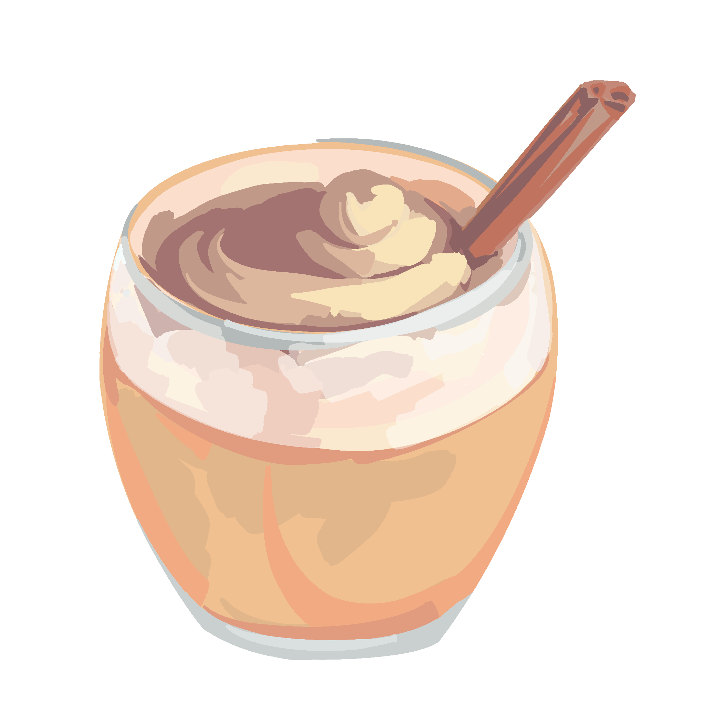
Calendar
How do hours work?
CS22 hours are collaborative spaces for students to work together on problems, facilitated by TAs. Hours will be primarily in-person. More details about hours can be found in the Hours and Recitation Policy. Remote hours will be facilitated using tickets handled from Hours.
Here is a link to the course calendar (same as below).
Resources
Course Textbook
Mathematics for Computer Science — Lehman, Leighton, MeyerReading this textbook is not required, though many students in the past have found it helpful in reinforcing what's covered in lecture!
Course Documentation
Important Links
Homework Resources
For many of you, this is your first time writing proofs, and even for those who have written proofs before, what we consider a good proof in CS22 likely differs from what made a good proof wherever you were writing them before! Check out the proof virtues document below to acquaint yourself with what we consider a good proof in CS22. Your proofs will be graded with respect to this document , so be sure to read it carefully, and come to hours with any questions.
Math Resources
Sample Proofs
- Bidirectional
- Bijective Proof Sketch
- More Bijective Proof Sketches
- Bijective Strategies
- Cases
- Contradiction
- Contraposition
- Counterexample
- Equivalence Relations
- Induction
- More Induction
- Strong Induction
- Probability
- Set Equivalence
The LaTeX files to all the above resources can be found here.
LaTeX Resources
LaTeX (pronounced la-tek) is a program that you will be using to make your homework solutions look beautiful. The sample proofs above were written in LaTeX to give you an idea of what documents written in LaTeX look like. LaTeX allows you to incorporate mathematical notation into your proofs, and because this class involves a healthy dose of mathematical notation, LaTeX is going to be very useful! Using LaTeX is required after the 2nd homework.
We don't expect you've ever done this whole LaTeX business before, and that's why we're giving you some time to learn it! To get started, we recommend creating an account on Overleaf, an online program for writing and compiling LaTeX. After you do that, here are some links to check out: Honestly, please use Overleaf. It's so much easier than installing anything on your computer. Trust me.
- CS22 LaTeX Cheat Sheet (start here!)
- A Not So Short Introduction to LaTeX
- LaTeX Symbols Guide
- Art of Problem Solving: LaTeX
- LaTeX Intro Wikibook
- LaTeX on Brown CS Systems
- CS22 LaTeX Workshop Recording
In general, a really good resource for learning LaTeX is the web. When you have a question, google it, and you'll likely find someone who had the very same question!
Below is the course document class:
If you'd like to download LaTeX on your computer, here are some resources to do that:
If you're using LaTeX and you just don't know what the code for some symbol is, here is a helpful list to start:
Alternatively, this is a neat site which will return the LaTeX code based on handwritten input (although searching your question on the web is likely more efficient):
Staff

Robert Y. Lewis
Instructor | Brookline, MA
he/him
Call me Rob! I'm 50% computer scientist, 40% mathematician, and 10% philosopher, so this course is pretty much my dream. I'm new this year to Brown and very excited we all get to share CS 22 in 2022.
fav hot beverage: a strong shot of dark espresso
Jiahua Chen
HTA | Shanghai, China
he/him
heya! I'm a sophomore studying visa+cs. I love art, photography, baking, and designing things.
fav hot beverage: yuenyeung
Rachel Ma
HTA | Toronto, Canada
she/her
CS and music concentrator, often either in CIT or the music buildings (or running in between), love composition, piano, and making puns with friends!
fav hot beverage: hot chai latte and earl grey tea with milk
Walter Zhang
HTA | Guangzhou, China
he/him
I have a 800+ (and counting!) day streak on the NYT crossword
fav hot beverage: black tea
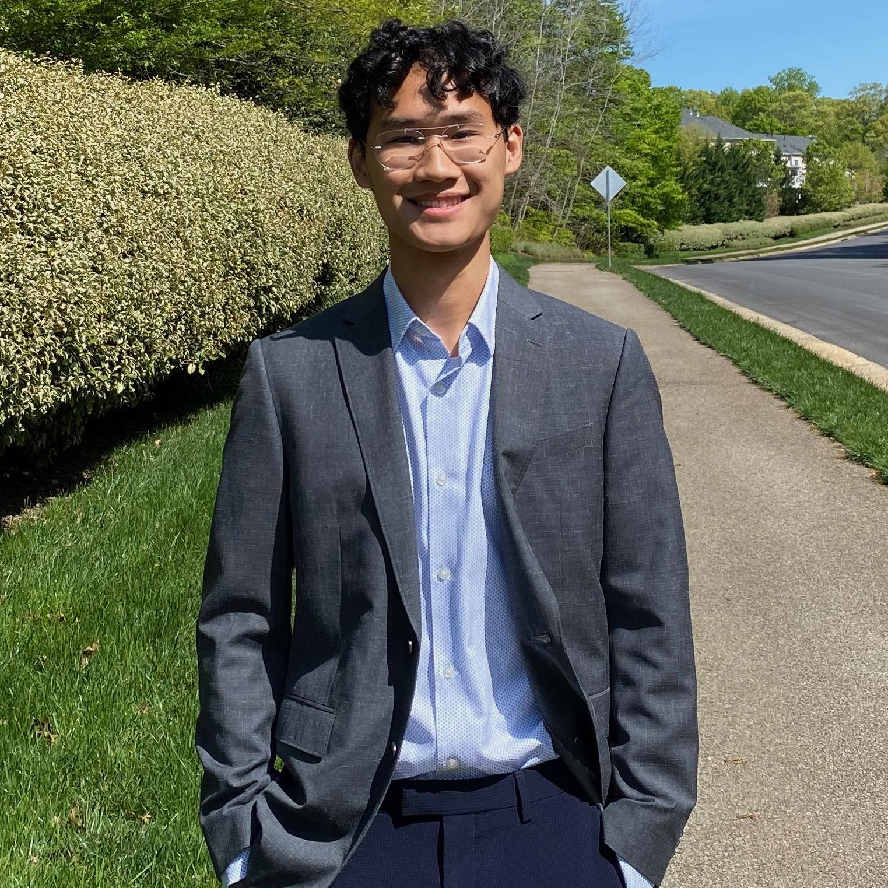
Nicholas Liu
HTA | Fairfax Station, Virginia
he/him
Hi! I'm a junior studying biophysics and CS. I like to run, play tennis, and listen to lofi. Looking forward to working with you guys!
fav hot beverage: covfefe
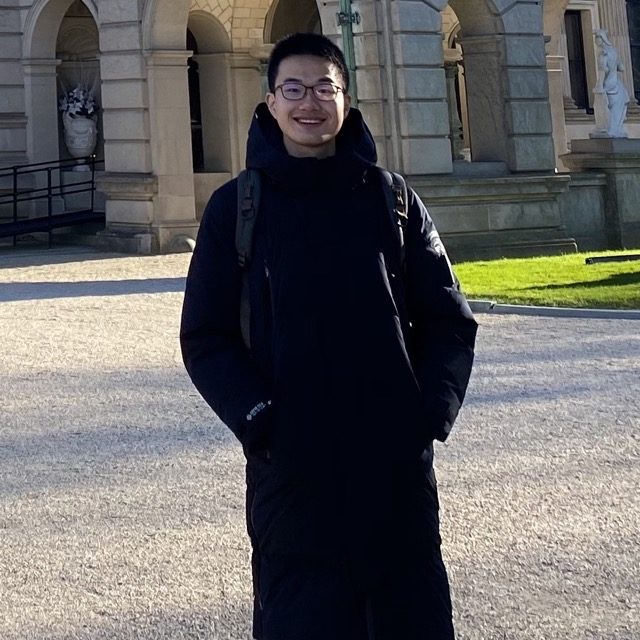
Jimmy Chen
UTA | Hangzhou, China
he/him
I've worked in tea plantations.
fav hot beverage: green tea
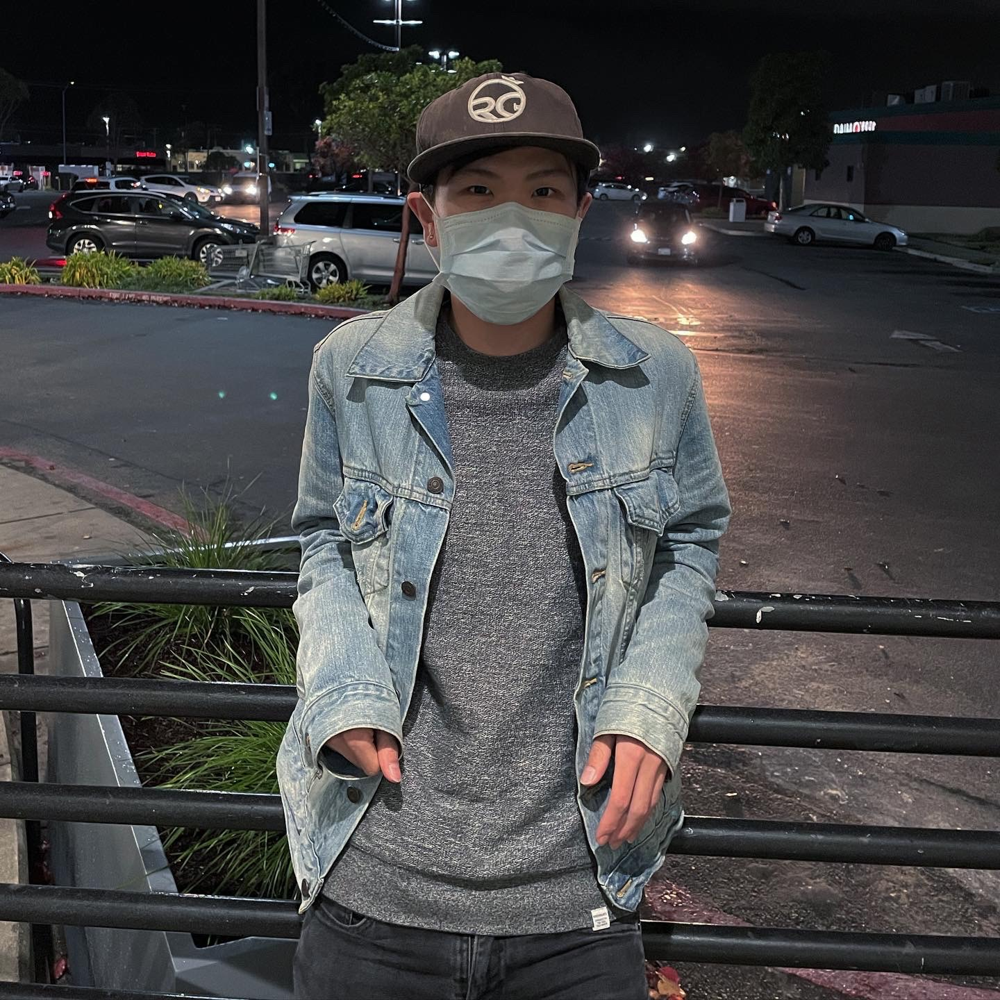
Linus Sun
UTA | Berkeley, California
he/him
sophomore studying cs + music!! I love rock climbing & producing/listening to music (currently into yves tumor, fka twigs, tyler, olivia rodrigo)
fav hot beverage: milk tea
Mary Lou
UTA | Alpharetta, Georgia
she/her
Hello! I'm a senior concentrating in Biology and CS. I love baking, swimming, taking walks, and watching dramas with friends.
fav hot beverage: green tea
Ian Gurland
UTA | Westfield, New Jersey
he/him
When I’m not coding, I’m probably practicing some percussion instrument or playing poker.
fav hot beverage: hot chocolate
Avi Trost
UTA | Gaithersburg, Maryland
he/him
I can pop my left ankle. I can also pop my right ankle.
fav hot beverage: chaider
Mariana Alvaro
UTA | Panama
she/her
I'm a senior concentrating in CS-Econ, and I have the cutest puppy on campus. Outside of class, I love going to the beach, singing, and drawing.
fav hot beverage: matcha latte
Alex Duchnowski
UTA | Brookline, Massachusetts
he/him
Three of my favorite movies are Memento, Spider-Man: Into the Spider-Verse, and The Social Network.
fav hot beverage: hot chocolate

Gil Alon
UTA | Newton, Massachusetts
she/her
Hi! I'm Gil and I'm a senior studying CS from Massachusetts. I love to cook and am always trying out new recipes, if you have any suggestions! I'm super excited to meet all of you :)
fav hot beverage: cappuccino

Edward Xing
UTA | Westfield, New Jersey
he/him
Hi! I'm a junior concentrating in Applied Math-Computer Science and Economics. In my free time, I enjoy playing table tennis, speedcubing, and performing magic.
fav hot beverage: matcha latte
Thomas Ottoway
UTA | Albany, New York
he/him
I am an ex-professional juggler.
fav hot beverage: coffee
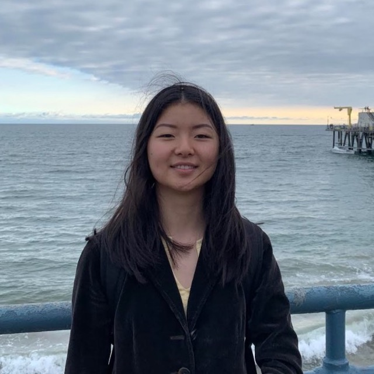
Karen Hu
UTA | Livingston, New Jersey
she/her
Some of my favorite things are: art, fashion, soup, cats, and music.
fav hot beverage: matcha latte
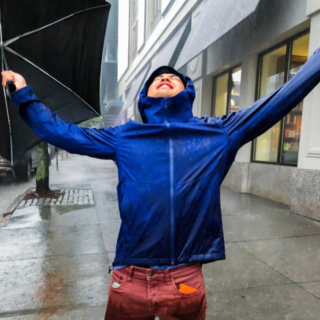
Ken Kawamura
UTA | Tokyo, Japan
he/him
This is my fourth time TAing this class.
fav hot beverage: hot chocolate
Ben Fiske
UTA | Princeton, New Jersey
he/him
fav hot beverage: hot chocolate
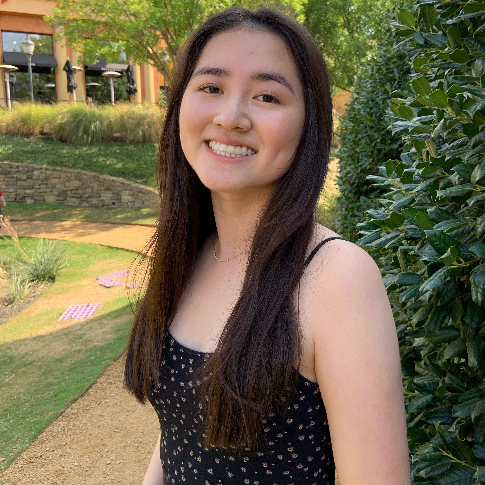
Michelle Lu
UTA | Dallas, Texas
she/her
Hi there! I'm a sophomore concentrating in APMA-CS. I enjoy rediscovering previous music favorites, rollerblading, and as of recently, trying out various hot (instead of iced!) caffeinated beverages.
fav hot beverage: dirty chai latte
Calder Ruhl Hansen
UTA | SF Bay Area
he/him
In addition to math I also enjoy coming up with new ways to produce pretty shapes.
fav hot beverage: trader joe's sipping chocolate
Ben Goff
UTA | St. Louis, Missouri
he/him, they/them
I'm on the Brown Taekwondo team and have a hairless dog back home!
fav hot beverage: second steeping of genmaicha green tea
Thomas Del Vecchio
UTA | Gaithersburg, Maryland
he/him
My ideal breakfast is an iced latte and blue room red velvet muffin.
fav hot beverage: green tea
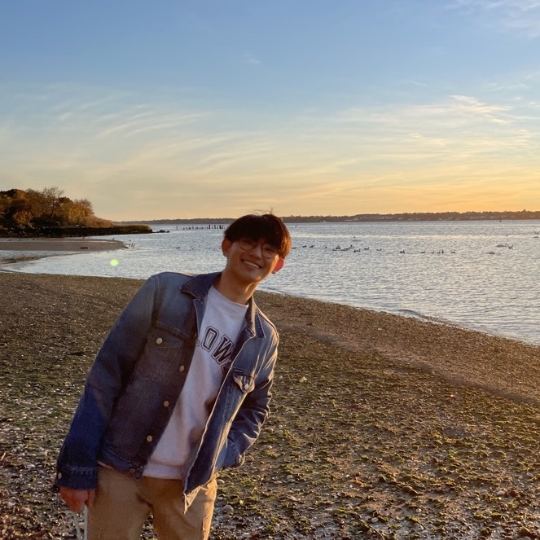
Tanadol (Tiger) Lamlertprasertkul
UTA | Bangkok, Thailand
he/him
Hi! I'm a sophomore from Bangkok, Thailand. I enjoy cooking, baking, and (most importantly) eating! I'm basically a foodie at heart :)
fav hot beverage: green tea
Carmen Yu
UTA | Sacramento, California
she/her
Aside from math and CS, I enjoy music, writing, philosophy, and warm weather :)
fav hot beverage: honey lemon tea
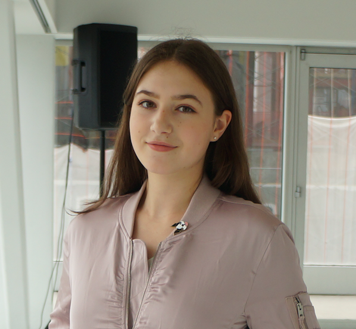
Lily Mayo
UTA | NYC, New York
she/her/hers
Some of my pandemic hobbies have been knitting, solving puzzles, and powerlifting!
fav hot beverage: my homemade lattes :)